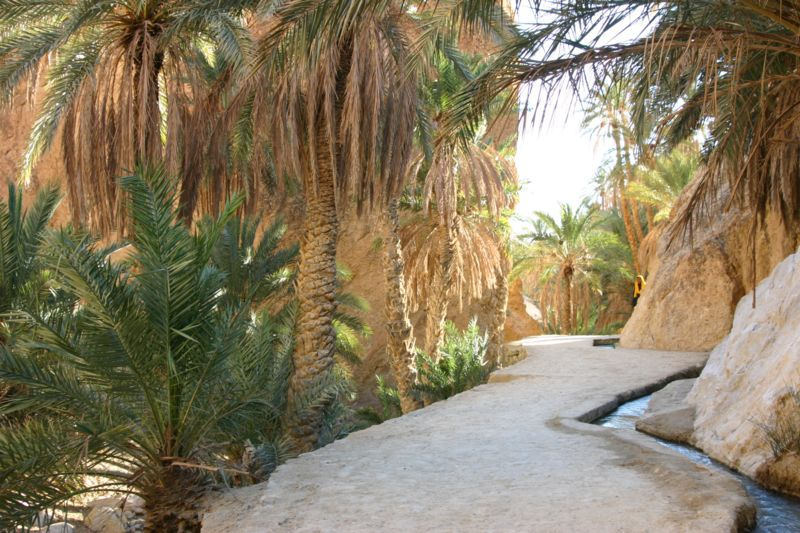

Chbika

Chbika is a mountain oasis in southern Tunisia, located in the Tozeur governorate. It was once a Roman outpost on the Saharan limes, used for signaling and communication.
Chbika is a mountain oasis in southern Tunisia, located in the Tozeur governorate. It was once a Roman outpost on the Saharan limes, used for signaling and communication.
Chbika features ancient Roman ruins. The area was historically vital for its water sources and desert location, offering a unique climate and rich history.
Enjoy cycling through scenic landscapes and nature trails.
Relax by the pool or beach, soaking up the sun and unwinding.
Experience the great outdoors, whether it's summer or winter.
Enjoy a cozy evening around a campfire, perfect for warmth and bonding.
Tamaghza is a mountain oasis located in southwestern Tunisia. It’s about 450 km from Tunis and 70 km from Tozeur. Scenes from the film "The English Patient" were filmed here.
Bezereos was a Roman outpost in the Limes Tripolitanus, tasked with security and surveillance. It sits on a hill with a strategic view in the southern Kébili governorate.